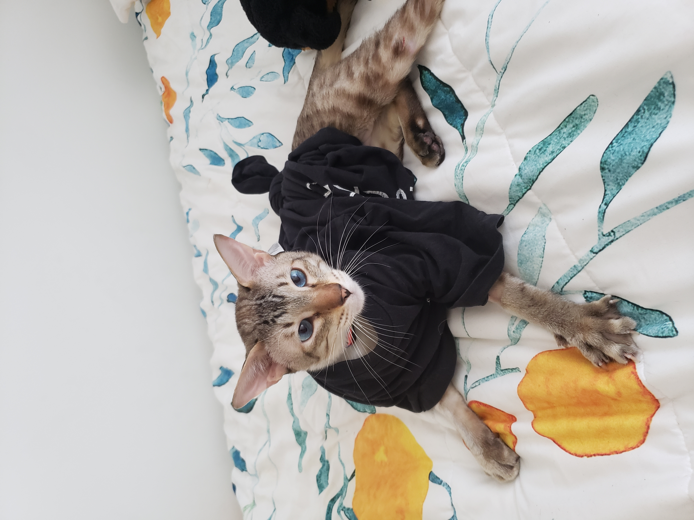
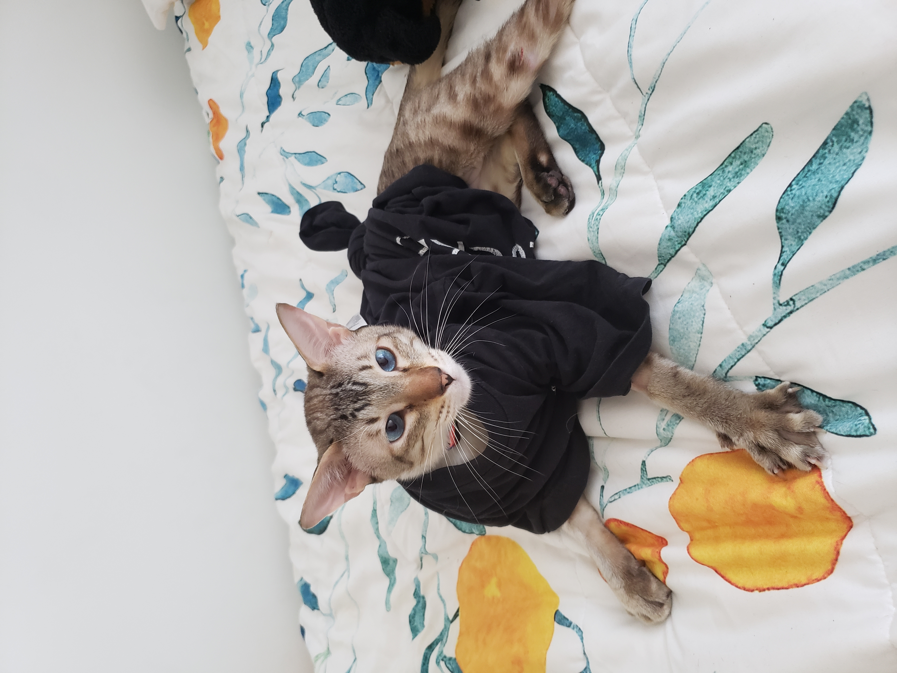

Publications
Designs
Various things I have designed!

DeLVE: Deep-time Literacy Visualization Exhibit
Designers: Mara Solen, Nigar Sultana, Laura Lukes, Tamara Munzner
DeLVE is a visualization system designed for use as a museum exhibit. It visualizes data from past events on different scales with the intention of helping museum visitors improve their proportional reasoning skills.
See the live demo here, the open-source repository here, and the associated paper here!
Actor Adaptability
Designers: Mara Solen, Ethan Tam, Ian Del Rio
Actor Adaptability is a visualization that showcases actors' flexibility and ability to act in multiple genres using data from the top 1000 movies of the last decade. The main view is a network diagram that shows all the actors of the dataset and the genres they tend to act in. Viewers can use this to see how actors compare against each other in the number of movies and diversity of genres they have been in.
See the live demo here!

UBC InfoVis Group Website
Designers: Mara Solen + all past web tzars!
I converted the old website to Jekyll and updated the stylings.
See the website here!

Website
Designer: Mara Solen
I like drawing aesthetic design inspiration from nature. The colours for this website were sampled from the photo below.
See the website source on GitHub!


 
